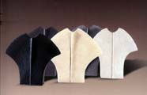
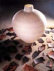
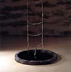

| Three
Contemporary Greek Ceramists
Stella
Bakatsi (b. 1945). After initially studying English Literature,
Bakatsi studied ceramics at the Central London Institute of Adult
Education from 1974-77. In 1977, she established her studio in Athens,
where she makes abstract sculpture and elaborate sculptural installations.
Bakatsi has won awards at the Panhellenic Ceramics Competition in
Marousi, Greece, in 1993, 1996 and 1997. She has been a member of
the International Academy of Ceramics since 1999.
Theodora
Chorafas (b. 1959). British-born Chorafas studied at the Camberwell
School of Arts and Crafts from 1977-78, at the Centrex for Professional
Training (Centro di Addestramento Professionale) in Faenza, Italy,
from 1978-79 and at the School of Decorative Arts (École
des Arts Decoratifs) in Geneva, Switzerland from 1979-84. In 1981-82
she interrupted her studied to teach at the Desert Sun School in
Southern California, USA, and work with Native American Indians
of the Southwest. On her return to Greece she taught ceramics from
1984-88. She has been a member of the International Academy of Ceramics
since 1990. Drawing inspiration from ancient Greek religion and
philosophy, Chorafas creates smoke-fired abstract sculpture.
Nikos
Sklavenitis (b. 1957). Sklavenitis studied at the School of
Fine Arts, Athens, from 1981-87. He has taught at at several institutions
since 1990, including the Athens Technical Educational Institute.
He established a studio in his hometown of Piraeus in 1985, where
he makes conceptual works from smoked earthenware, paperclay and
mixed media elements. Sklavenitis, who is a member of the International
Academy of Ceramics, was awarded first prize at the Panhellenic
Ceramics Exhibition in Marousi, Greece, in 1996.
More Artists of the Week
More Articles
|
{kind=link}
{kind=link}
{kind=link}